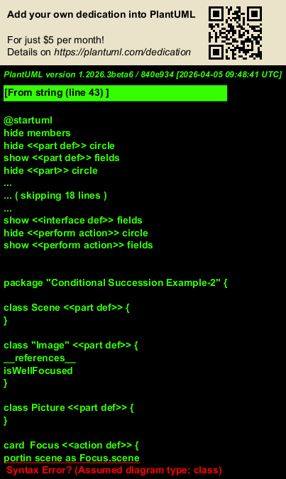

@startuml
hide members
hide <<part def>> circle
show <<part def>> fields
hide <<part>> circle
show <<part>> fields
hide <<attribute def>> circle
show <<attribute def>> fields
hide <<enum def>> circle
show <<enum def>> fields
hide <<item>> circle
show <<item>> fields
hide <<item def>> circle
show <<item def>> fields
hide <<connection def>> circle
show <<connection def>> fields
hide <<port def>> circle
show <<port def>> fields
hide <<port>> circle
show <<port>> fields
hide <<action def>> circle
show <<action def>> fields
hide <<interface def>> circle
show <<interface def>> fields
hide <<perform action>> circle
show <<perform action>> fields
package "Conditional Succession Example-2" {
class Scene <<part def>> {
}
class "Image" <<part def>> {
__references__
isWellFocused
}
class Picture <<part def>> {
}
card Focus <<action def>> {
portin scene as Focus.scene
portout image as Focus.image
}
card Shoot <<action def>> {
portin image as Shoot.image
portout picture as Shoot.picture
}
card TakePicture <<action def>> {
portin scene as TakePicture.scene
portout picture as TakePicture.picture
}
card takePicture <<action>> {
card focus <<action>>
card shoot <<action>>
focus --> shoot :[focus.image.isWellFocused]
}
}
@enduml